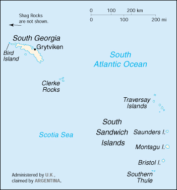

and the South Sandwich Islands
![[Country Flag of South Georgia and the South Sandwich Islands]](../flags/sx-lgflag.jpg)
| South Georgia and the South Sandwich Islands |
|
        |  | |
| Geography |
Location: Southern South America, islands in the South Atlantic Ocean, east of the tip of South America
Geographic coordinates: 54 30 S, 37 00 W
Map references: Antarctic Region
Area:
total:
4,066 sq km
land:
4,066 sq km
water:
0 sq km
note:
includes Shag Rocks, Clerke Rocks, Bird Island
Area - comparative: slightly larger than Rhode Island
Land boundaries: 0 km
Coastline: NA km
Maritime claims:
exclusive fishing zone:
200 nm
territorial sea:
12 nm
Climate: variable, with mostly westerly winds throughout the year interspersed with periods of calm; nearly all precipitation falls as snow
Terrain: most of the islands, rising steeply from the sea, are rugged and mountainous; South Georgia is largely barren and has steep, glacier-covered mountains; the South Sandwich Islands are of volcanic origin with some active volcanoes
Elevation extremes:
lowest point:
Atlantic Ocean 0 m
highest point:
Mount Paget (South Georgia) 2,915 m
Natural resources: fish
Land use:
arable land:
0%
permanent crops:
0%
permanent pastures:
0%
forests and woodland:
0%
other:
100% (largely covered by permanent ice and snow with some sparse vegetation consisting of grass, moss, and lichen)
Irrigated land: 0 sq km (1993)
Natural hazards: the South Sandwich Islands have prevailing weather conditions that generally make them difficult to approach by ship; they are also subject to active volcanism
Environment - current issues: NA
Geography - note: the north coast of South Georgia has several large bays, which provide good anchorage; reindeer, introduced early in this century, live on South Georgia
| People |
Population:
no indigenous inhabitants
note:
there is a small military garrison on South Georgia, and the British Antarctic Survey has a biological station on Bird Island; the South Sandwich Islands are uninhabited (July 2000 est.)
| Government |
Country name:
conventional long form:
South Georgia and the South Sandwich Islands
conventional short form:
none
Data code: SX
Dependency status: overseas territory of the UK, also claimed by Argentina; administered from the Falkland Islands by UK civil commissioner Donald A. LAMONT, representing Queen ELIZABETH II; Grytviken, formerly a whaling station on South Georgia, is the garrison town
Capital: none; Grytviken on South Georgia is the garrison town
National holiday: Liberation Day 14 June (1982)
Constitution: adopted 3 October 1985
Legal system: English Common Law
Diplomatic representation in the US: none (overseas territory of the UK, also claimed by Argentina)
Diplomatic representation from the US: none (overseas territory of the UK, also claimed by Argentina)
Flag description: the flag of the UK is used
| Economy |
Economy - overview: Some fishing takes place in adjacent waters. There is a potential source of income from harvesting fin fish and krill. The islands receive income from postage stamps produced in the UK.
Budget:
revenues:
$291,777
expenditures:
$451,000, including capital expenditures of $NA (1988 est.)
Electricity - production: 2 million kWh
Electricity - production by source: NA
Electricity - consumption: NA
| Communications |
Telephone system:
domestic:
NA
international:
coastal radiotelephone station at Grytviken
Radio broadcast stations: none
Television broadcast stations: 0 (1997)
| Transportation |
Ports and harbors: Grytviken
Airports: none
| Military |
Military - note: defense is the responsibility of the UK
| Transnational Issues |
Disputes - international: claimed by Argentina